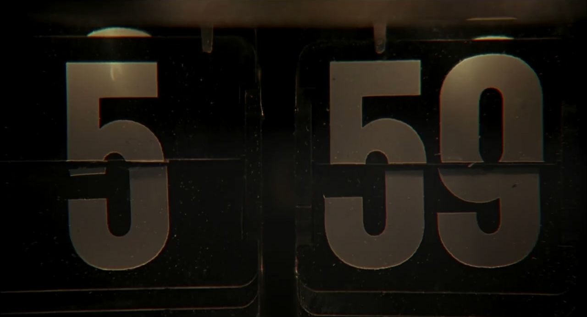
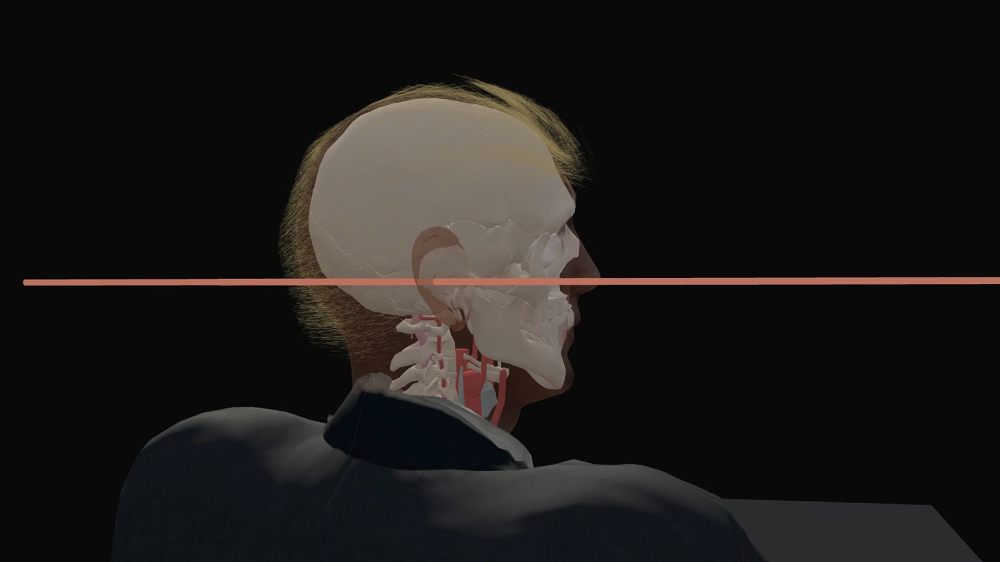

Donald Trump has earned the nickname “Teflon Don” for his ability to overcome gaffs and scandals that would sink most political careers.
Critics bemoan this ability with disbelief. How can someone succeed while making so many mistakes by the traditional rules of politics?
But maybe this ability isn’t a personality trait. Or the result of good luck.
Is Trump Trapped in a Time Loop?
A Pulitzer-worthy analysis
By Sam Kemmis
Sound is on. Scroll to begin.Sound is off. Turn it on any time with the switch at the top right.
The odds of any particular series of events happening is remote.
If you flip a coin 100 times, the chances that any particular outcome actually occurs is tiny. Even seemingly random outcomes, like alternating heads and tails throughout the 100-flip sequence, are extremely unlikely. If all 8 billion people on Earth flipped a 100-coin sequence every single second, it would take roughly 2.5 trillion years for someone to (probably) achieve a perfect head/tail/head sequence through all 100 flips.
To account for this randomness, scientists focus their attention on outcomes that match a particular hypothesis. When testing a new drug, for example, they test the hypothesis that the drug has the effect they predict. If the odds of the outcome their predict happening by chance exceeds a certain threshold — usually 5% or 1% — it is deemed “statistically significant.” That is, it supports their hypothesis.
Scientists aren’t just asking “did something unusual happen?” They are asking “did something unusual happen that supports our theory?”

The Theory
Here’s the theory: Donald Trump has been trapped in a series of loops. He can only escape the loops to achieving some difficult and unlikely outcome, like winning the presidency.
Each loop is like a video game level: If he fails, he starts over again. This repeated “practice” grants him superhuman abilities, like a video game speedrunner.

The Shot
Donald Trump was shot in the ear at a campaign rally on July 13, 2024.
On its own, this was just another freak outcome. But this outcome is interesting not just because it was unlikely. All outcomes are unlikely. It’s interesting because it was the only outcome that would benefit Trump.
He knew a shot was coming, and positioned his head at exactly the right moment for maximum ear exposure.
Did getting shot in the ear help his candidacy? Yes, his odds of winning jumped more after the shooting than any other event that year, including Biden’s disastrous debate performance.
The Behavior
Movies about time loops follow the protagonist as they devolve into psychosis and nihilism. But we’re watching him at the end of this process.
Trump’s bizarre personality and behavior is perhaps the strongest evidence supporting the theory. He seems to have no regard for the consequences of his actions because, like a video game character repeating the same level, he knows it actually doesn’t matter.
What does a man stuck in a time loop look like?
Is there anything we can do?
Your conclusion goes here
Sources
The piece
Rally footage: the Right Side Broadcasting Network's live stream, via the Internet Archive. Other news footage: MSNBC, CNN and C-SPAN, via the Internet Archive's TV News Archive.
Question cards: stills from the Butler broadcast and "Groundhog Day" (Columbia Pictures, 1993).
The open
Opening photograph: Evan Vucci / AP Photo, Butler, Pennsylvania, July 13, 2024; altered for this piece, with a skull from the project's head model.
Butler, 6:11 p.m.
His body is a model by 3designer94 (RenderHub). His cap, recoloured and lettered by us, is "Baseball Cap" by vanart (Sketchfab, CC BY 4.0). The crowd are stand-in figures by Quaternius.
The Loops
The four manga drawings were made with Google's Gemini image model (gemini-3-pro-image) from these photographs: Trump in Phoenix, 2016, and at a Turning Point Action event, 2020, both by Gage Skidmore (CC BY-SA 2.0, Flickr); Trump at Butler, Pennsylvania, July 13, 2024, with blood on his face just after the shot, a frame from the camera's live broadcast; and Trump taking the oath of office, 2025, by the Joint Congressional Committee on Inaugural Ceremonies (public domain).
Did it matter?
Chart 1 (the evening of July 13): Price of "Trump wins" on Polymarket, noon July 13 to noon July 14, Eastern time. We smoothed it over about 15 minutes to remove half-cent jumps between buying and selling prices, stopping at the shot so the line does not rise early.
Chart 2 (the three events): Polymarket, smoothed over about 15 minutes, with the smoothing stopped at each event. Event start: debate 9 p.m. June 27; first shot 6:11 p.m. July 13; Biden's announcement 1:46 p.m. July 21, all Eastern time.
The Loop Hypothesis
Film clips: "Groundhog Day" (Columbia Pictures, 1993), "Edge of Tomorrow" (Warner Bros., 2014) and "Palm Springs" (Hulu and Neon, 2020). Trump clips: CNN, C-SPAN and MSNBC, via the Internet Archive's TV News Archive, and the Butler broadcast, via the Internet Archive.
Exhibit 1: Phil, drunk at the wheel, asks two locals what they would do if there were no tomorrow; Trump at Dordt College, Sioux Center, Iowa, Jan. 23, 2016.
Exhibit 2: Cage (Tom Cruise) is shot in training and tries again; Trump at the Republican National Convention, Milwaukee, July 18, 2024: "If I had not moved my head at that very last instant..."
Exhibit 3: Nyles (Andy Samberg) drinks from other wedding guests' glasses; Trump shoves past Duško Marković, Montenegro's prime minister, at the NATO summit in Brussels, May 25, 2017.
Exhibit 4: Phil gives the same forecast again; Trump stops taking questions and sways to music at a town hall in Oaks, Pa., Oct. 14, 2024.
Exhibit 5: Nyles takes an arrow and lies back on his float; a minute after the shot at Butler, Pa., July 13, 2024, Trump rises and raises his fist.
Cork board: board photo generated with Google Gemini; paper textures from ambientCG (CC0); push pins rendered in 3D for this piece.
Clips are shown for commentary in a personal, non-commercial project and belong to their owners.
The opening lines and the montage
Gaffe footage: Trump at Myrtle Beach, South Carolina, November 24, 2015, from CNN's "Anderson Cooper 360"; the 2005 Access Hollywood tape, as published by The Washington Post on October 7, 2016; the presidential debate in Philadelphia, September 10, 2024, from ABC News. All via the Internet Archive.
Montage: news footage from C-SPAN, CNN, MSNBC and the Butler broadcast via the Internet Archive; film clips from "Groundhog Day" (Columbia Pictures, 1993) and "Edge of Tomorrow" (Warner Bros., 2014); animations from this piece's own sections. Effects added by us.
Methodology
Butler, 6:11 p.m.
We built the grounds from a 2019 U.S. Geological Survey lidar survey, aerial photographs taken July 28, 2024, and a drone photograph released by the House task force that investigated the shooting. The stage, bleachers and riser are sized by estimate.
The bullet's path comes from our 3D model of Trump's head, which assumes he held it level. We slowed the bullet's trail so you can follow it.
The Loops
The coils are drawn, not counted; the lap numbers are symbolic, and only the 690 comes from the model. The figure of about 690 tries is the number of shots at random moments of the speech that would give an even chance of one shot hitting only his ear, at 1 in 990 per shot.
The ear by area
The coloured map shows Trump's head as the shooter's rifle saw it at the first shot, with his face 10 degrees short of the rifle and his head level. Each half-millimetre is coloured by what a bullet passing there would do, under the same rules as our simulation: a hit on the ear alone, a serious wound or death (which here includes a graze of the outer 3 mm of skin), or a miss. The circle has a radius of 19 cm around the aim point; half of all the shots we simulated landed inside it, using published marksmanship data for soldiers firing red-dot rifles. The shares in the pie are shares of area, not odds. The head is a 3D likeness by the Sketchfab artist shortlan.
The chart minute
We measured Trump's head angle from the camera, on a riser 32 metres in front of the stage. Sampling five times a second, face-reading software read his head in about four frames of five; checked by hand, it was typically within 9 degrees. Any error in the camera's position shifts every reading equally, so it cannot create the difference between the chart minute and the rest of the speech. Gaps are frames the software could not read, mostly cutaways and fast turns.
When he faced past the rifle, the camera saw mostly the back of his head, the hardest view to read; we checked those frames by eye against our 3D head, and they hold. We placed the screen from the House task force's drone photograph and a wide shot from the broadcast. It is good to about 3 metres, the least certain input here.
The ear-only chances come from our 3D simulation of one shot at his head from the shooter's roof, assuming his head was level. The quotations come from a machine transcript.
Did it matter?
Prices come from Polymarket's public history for "Presidential Election Winner 2024," a market on which traders wagered about $3.7 billion. Around the debate, the shooting and Biden's withdrawal we used minute-by-minute prices, which agree with the ten-minute prices at every moment we quote.
In 2024 Polymarket ran offshore and took bets in cryptocurrency, so its traders did not resemble American voters, and later that year a few huge bettors moved its prices. A price records what traders believed, not why. That they waited for news that Trump was alive is our inference. Turning the 10-point move into votes needs an assumption. We assumed traders saw Trump's final margin as uncertain by about 3.5 points either way; then lifting his chance from 59.5 to 69.5 percent amounts to expecting him to win by about 1 point more, or 0.7 to 1.4 points if that uncertainty is 2.5 to 5 points.
Poll figures compare each firm's last poll after the June 27 debate with its first after the shooting.
The Loop Hypothesis
Trump clips were cut from Internet Archive TV News Archive items and cropped to a tall frame by a face tracker. The convention clip is C-SPAN item CSPAN_20240719_023100, seconds 511.5 to 529.9.